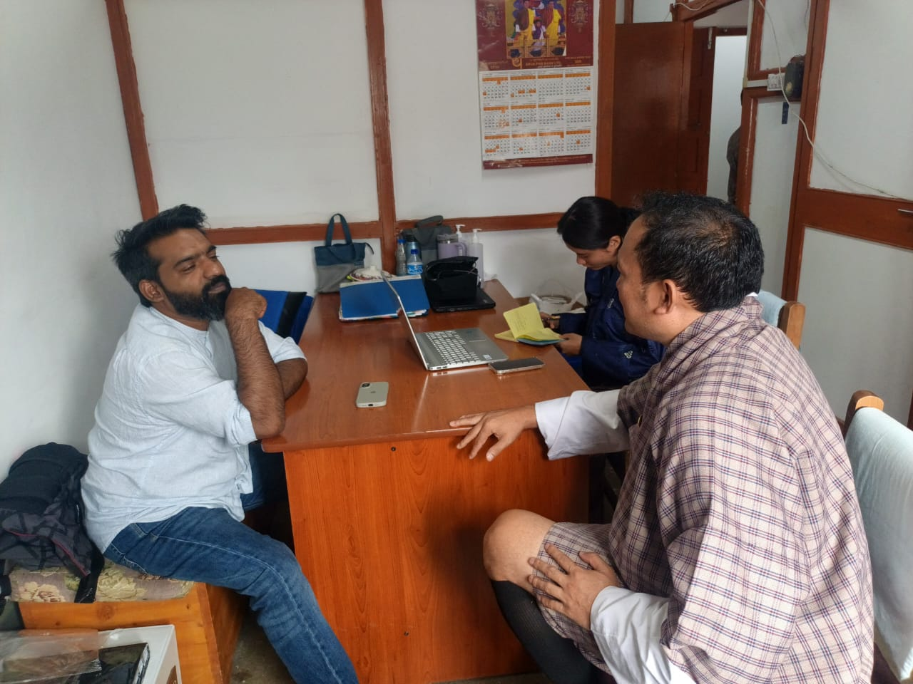

This morning, Ranjit Balaj, Phub Zam, and Karma Wangchuk met with Mr. Sonam Wangchuk, Project Officer of the Cancer Program, to learn more about the current state of palliative care services in Bhutan and the opportunities to strengthen and expand them.
During the meeting, the team learned that palliative care services are currently available in 15 districts, with services initiated by the respective focal persons at district hospitals. The teams and units supporting palliative care in these districts have already received the necessary training to provide services within their communities.
However, expanding palliative care across the country will require a stronger network of volunteers and caregivers. These community-based resources will be important in strengthening outreach and helping extend palliative care services to districts that are not yet covered.
A Pilot Training Program
The team was also informed about an upcoming pilot palliative care training program, which is expected to begin in the first week of November across five districts. The specific Dzongkhags are yet to be confirmed.
This program presents an exciting opportunity for the team to travel to the selected districts, demonstrate the digital tools, learn directly from healthcare teams, and share knowledge and experience as part of the training.
Being present in the field will also allow the team to better understand the realities faced by healthcare workers and communities and explore how the tools can fit into existing palliative care workflows.
Learning Before Building
As part of the preparation, Dr. Kinley’s team will provide Druk.help with a two-day basic clinical palliative care training course. The dates for the training are yet to be confirmed.
This is an important step. Understanding the fundamentals of palliative care will help the team engage more meaningfully with healthcare professionals and ensure that the technology they build is grounded in the actual needs of patients, caregivers, volunteers, and healthcare teams.
The discussions today reinforced an important idea: expanding palliative care is not only about building technology — it is about strengthening the people, knowledge, and systems that make care possible.
The upcoming training and district visits will give the team an opportunity to continue learning from the field and explore how digital tools can support the broader effort to make palliative care more accessible across Bhutan.